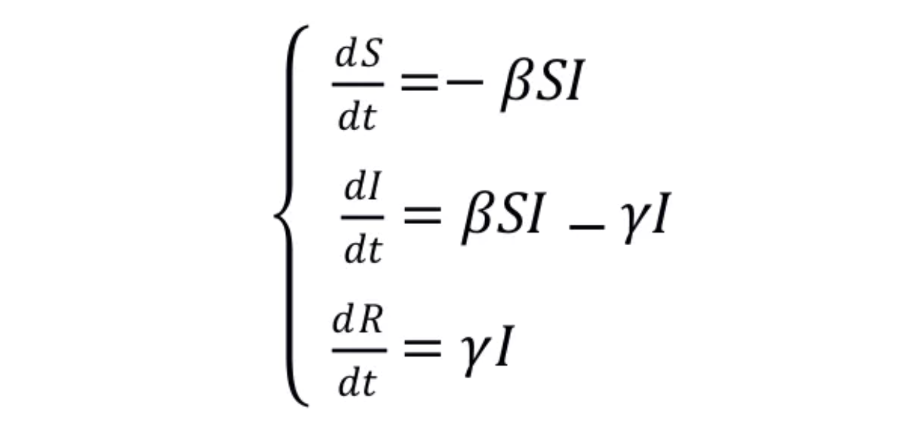
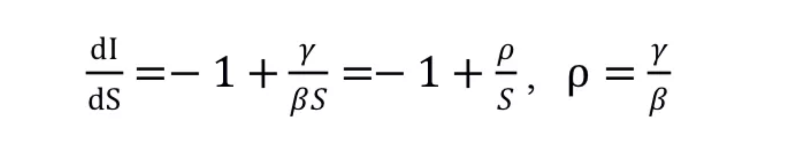
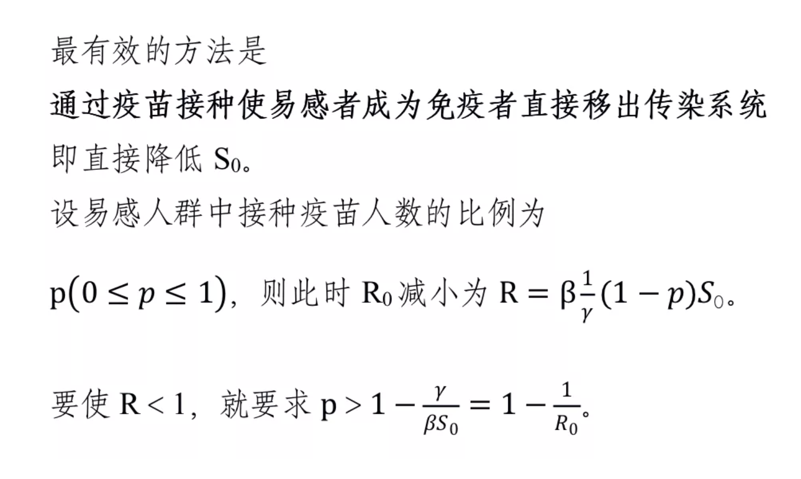
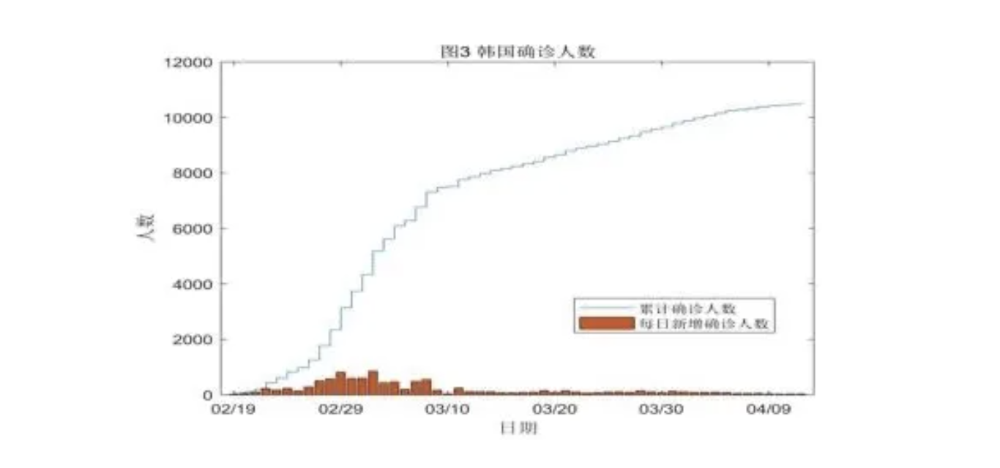
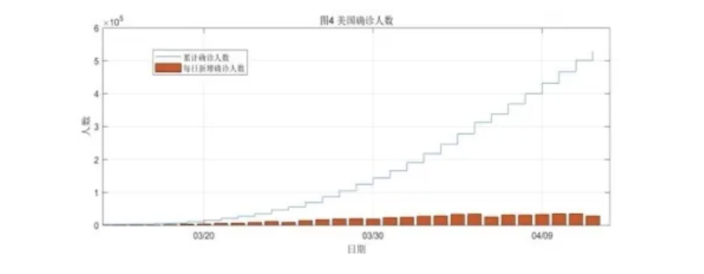

新型冠状病毒
Coronavirus disease 2019
COVID-19
肺炎的首例患者于2019年12月12日入院，至今已在世界范围大流行。
1月30日，世界卫生组织（WHO）宣布将新型冠状病毒感染的肺炎疫情列为“国际关注的突发公共卫生事件”，3月11日，将其评估认定为大流行病[1]。到2020年4月初，全球已报告确诊超过100万人，除中国大陆内部疫情基本结束、韩国等少数国家和地区疫情得到有效控制外，欧、美等仍处于爆发期，每日新增病例快速增长，部分国家医疗资源已然耗尽，无法保障全部病人得到有效治疗，病死率很高。
控制疫情蔓延、保护人民的健康以尽快恢复社会秩序成全当前世界各国的首要任务。
本文根据COVID-19肺炎的传播动力学特征，通过跟踪、汇总主要国家的疫情发展情况、为应对疫情采取的公众政策和主要措施，初步分析了公众政策对控制疫情蔓延的重要作用。
一，COVID-19的流行学特征
国际卫生组织、各国的卫生组织、医疗机构等已对COVID-19的流行学特征开展了大量研究，中华预防医学会[2]、WHO[3]等都给出了综述性研究成果。
对其开展的早期动力学研究表明[4]，该病平均潜伏期为5.2天（95%置信度为12.5天），流行加倍时间为7.4天，由一人传染至另一人的平均间隔时间为7.5天，据此估算出基本再生数R0为2.2，即每例患者患病期平均感染2.2人;WHO估计早期R0为1.4-2.5。
随着疫情的发展，不同研究团队对更多病例进行分析，给出新的R0估值范围在3-4之间，说明早期研究低估了该疾病的传染能力。
新型冠状病毒传播的主要方式是呼吸道飞沫传播，或通过与感染者间接接触传播。感染者咳嗽、打喷嚏、讲话时产生的飞沫中含有病毒，易感者吸入后导致感染。含有病毒的飞沫沉积在物品表面，接触污染易感者的手后，再接触口腔、鼻腔、眼睛等黏膜，也会导致感染。
另外，气溶胶传播方式也需要关注，特别是在医院发热门诊、感染病房等病毒高浓度区，以及机舱、车厢、电梯间等密闭小空间等，要特别注意预防。病毒的其它传播方式也在进一步研究中。
作为一种新发传染病，人群没有免疫力，普遍易感。
与新冠病毒肺炎患者、无症状感染者密切接触的人是感染新冠病毒肺炎的高危人群，特别需要关注的是医护人员，他们与感染者近距离接触频繁，感染风险高。
二，传染病动力学模型及防控原则简介
传染病动力学是对传染病进行理论定量研究的重要方法，通过对传染病建模的动力学分析，可以分析疾病发生过程、揭示流行规律、预测变化趋势、分析关键因素，寻求预防和控制疾病的最优策略。
初步研究表明，新型冠状病毒肺炎患者在潜伏期就有传染性，目前也没有证据显示治愈患者还有传染能力。
可以用1927年Kermack和McKendrick[5]为研究黑死病的流行规律建立了的SIR仓室模型，以及该模型提出的预测传染病传播的“阈值定理”对传染病的流行特性进行初步分析。在该模型中，当一种传染病入侵某一地区并在该地区扩散时，基本再生数R0被定义为一个传染个体在他的整个传染期通过与易感者有效接触而导致易感者感染的期望数[6]，在传染病动力学模型中，这是一个很重要的参量。
SIR模型中，针对某类传染病将人群分为三类：易感者S(t)染病者I(t) 和移出者R(t) ，分别表示时刻未染病但可能被染病的人数、已被感染的人数和从感染者中移出的人数（包括全部的已治愈患者和死亡患者）。
在不考虑人口迁移和自然出生、死亡等因素情况下，可以假设总人口保持常数K，
t 时刻，单位时间内被传染人数为BS(t) I(t)，其中B，反映一个感染者与一个易感者接触使其感染病毒的几率；单位时间从感染者中移出的人数为YI(t)，Y为移出率系数，即从感染者人群中被移出的几率（治愈或死亡）。
据此可列出微分方程组如下：
对COVID-19病毒肺炎，治愈后即被移出传染系统的患者会对病毒产生免疫，因此 R(t)不会重新进入中，可以得到
防止传染病流行，就是采取必要措施降低R0，使其小于1。对类似COVID-19这样的病毒，通过戴口罩、勤洗手、加强个人卫生、减少社交活动、尽早发现并隔离感染者等方式，可以有效减少病毒传播、保护易感人群，从而减小传染几率B；通过积极治疗手段，并且对患者多压力大的地区提供医疗救治队伍支援，可以提高治疗效果增大移出率。这些都是降低R0的有效手段。
可见，R0越大，为防止疾病流行所需的接种人数的比例p就要越高,按照数据分析，在有效接种率达到60%-80%的情况下，才可有效控制病毒传播。在目前还未研制出有效的COVID-19疫苗情况下，采用必要的手段控制传染源、切断传播途径、保护易感人群就显得尤为重要。
三，疫情发展情况及各国防控措施
各国采取的措施[7]包括：进行疫情排查，隔离传染源；加强密切接触者的管理，加快疑似病例的诊断；切断外部输入通道；强化社区防控；采用积极的治疗手段等等。这些都能够实际降低基本再生数R0，使得疫情得到有效控制。但各国国情和公共政策的差异，导致疫情在各国的传播情况有很大差别。
中国从1月20日，卫生部将新冠肺炎列为乙类传染病，按甲类传染病应对起，在全国范围内根据疫情发展状况不断调整强化防控措施。各城乡以社区为单位，实施网格化、地毯式管理，群防群控，做到“早发现、早报告、早隔离、早诊断、早治疗”，防止疫情输入、蔓延、输出，控制疾病传播。经过两个多月的不懈努力，目前国内疫情的蔓延已经得到控制（如图1、2所示），现在防控的重点转到了“外防输入”。
韩国于2月18日出现了“超级传播者”之后，疫情快速爆发，2月29日最高单日新增确诊人数接近千人，但韩国的措施时迅速而有力的，包括向全社会公开疫情信息；包括大范围检测；包括分级隔离治疗，轻症去“方舱”隔离治疗，中、重症和危重患者住院治疗；不实行“封城”“停工”等政策，但对重点人员实行严格的追踪和管控。通过这些措施，韩国较为迅速地控制了疫情的传播（如图3示）。
欧美等国在中国疫情发生后，采取了切断中国传入的措施，但国内准备工作显然不足，未能及时发现病毒已经扩散至社区，在2月底3月初由输入型病例为主转为国内传播为主的情况下，出现病例的快速增加，部分国家出现了医疗资源迅速被挤占、国内应对捉襟见肘的公共卫生情况。
在今年初新冠肺炎在武汉被发现后，美国及时启动了防止病毒从中国传入的措施，2月初就开始拒绝中国籍人员入境，同时取消了美国许多航空公司飞中国的航班，但再无其它实质性的防控措施。
3月初病人从欧洲流入导致社区传染后，由于准备不足，应对措施较慢，出现社区传染。美国的应对措施是逐渐分阶段增强，3月初开始加大排查力度，将新冠肺炎检测费用纳入医疗保险范围，3月13日，总统宣布国家进入紧急状态，各州也根据疫情逐步的宣布居家令，防控措施逐渐落实。但已经错过了早期防疫的最佳时期，美国已经迅速成为全球感染和死亡人数最多的国家（如图4示）
欧洲的疫情恶化是从2月中下旬开始的，意大利最早出现疫情爆发情况，并迅速在全欧洲扩散。意大利的防控措施是根据疫情情况逐步加强的。
2月中旬，意大利针对部分地区疫情严重地区的市镇采取了封闭隔离措施，但未能有效阻止疫情在全国的蔓延，从3月初开始，将措施升级为在全国范围内关闭学校、取消大型活动、居民不得无故外出、强化检测能力和医疗救治能力、加强对医护人员保护等。
经过努力，意大利疫情情况正在逐步好转，但防控措施还需持续一段时间。
意大利疫情暴发之时正值狂欢节假期，大量来自欧洲各地的游客前往意大利的滑雪胜地和旅游城市度假，从而导致疫情向欧洲多国扩散，西班牙、法国、德国等均已有超过超过十万的确诊人数。
德国政府成立危机应对小组，全面加强疫情防控，取消大型活动，要求对入境人员健康状况进行严格管控。为防止聚集传染，这些国家都关闭了学校，禁止人员聚集，发布居家令要求居民不得无故外出。
英国最初是放弃防控，采用群体免疫的策略。但随着感染人数的增加，甚至首相都被感染的情况出现，英国便放弃采用群体免疫的策略，开始采取积极的防控措施。英国卫生部已将新冠疫情风险等级上调至最高级别，英国政府也已经发布了关闭学校、取消大型活动及对特定人员和区域实施隔离等强制措施。
总体来看，这些措施已经发挥了积极的效果，据估计意大利的新冠肺炎基本再生数R0在3月下旬已经小于1，西班牙也已进入疫情发展平稳期，德国由于有超强的医疗能力一直保持很低的病死率。但由于错失早期控制机遇，病毒已经大范围传播，这些国家确诊病例增长数仍将在高位保持一段时间，疫情防控压力仍然很大。
另外，欧洲还有类似瑞典这样被动应对新冠病毒肺炎的国家。欧洲各国政策的不一致、效果差异、医疗条件的不均衡，影响了欧洲整体的疫情应对进程，不利于在全洲范围内尽快控制疫情泛滥。
四，新冠肺炎疫情对全球公共健康政策的启示
病毒在短短三个月内的迅速传遍世界各个国家，各个地区。身处这样一个全球化的时代，没有一个国家可以独善其身，这就需要改变原有的国际防疫的方式，改善各国特别是经济欠发达地区的医疗水平和快速应对能力。
政府需要加强公共卫生控制措施，谁也不能判断下次疫情什么时候会来，还有没有下一次，这就需要提前准备好应急计划和缓解干预措施。
同时，也要具备在紧急情况下，各国全国范围内的动员与管控能力，从此次疫情应对中吸取教训，动员能力强，管控措施快速启动丙炔有效管理国家和地区，就能够在短时间内有效控制疫情。
疫苗总是晚于病毒出现的，需要很长时间才能研发出，因此在传染病发生时，控制传染源，切断传播途径和保护易感人群是应对传染病最有效的方法。
面对感染者的早发现、早报告、早诊断、早隔离、早治疗，是防控的保障，这一措施已为中国所证实，也必将在全球应对新冠肺炎的行动中得到证实。